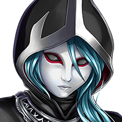

アーク
それは世界が救われようと 決して消えることは無い。


メロード
愚かな……。
メロード
イシュグリアを統べる魔神とも あろうものが
メロード
なぜくだらぬ人間のために その生命を捨てる……。
カロン
どんなに裏切られようと ルシアスの目指す世界を信じ
カロン
ただ、私が生命を捧げたのが神ではなく 人間の少女だったというだけだ。
メロード
だが、これで終わるのも いいだろう……。
メロード
ルシアス様が危惧した カルナ・マスタはすでに滅んだ。
メロード
ここで人間どもが奴の魂をも 滅ぼせば我が任務は完遂される。
メロード
だが、魔神よ……。 お前もわかっているのだろう……。
メロード
その裏切り者ともども 長くは生きられないことは……。
メロード
まあいい……。 我には関係の無いことだ……。
メロード
やっと我も…眠りにつける……。 悠久の…孤独から…離れ……。
カロン
悠久の時を生きた ルシアスの真の神徒メロードよ。
カロン
気にするな……。 これもまた私の望みなのだから……。
カロン
アークよ……。 お前は過去の呪縛から解き放たれた。
カロン
お前はお前が関わった者たちの 真の強さを再び知ったのだろう？
カロン
彼らもまたお前の悲哀を 知っていただろうことを……。
カロン
気にするな……。 イリアのことを頼む……。
カロン
悠久神殿でお前の剣を振るえば……。 それは解けるはずだ……。
カロン
その瞳の力こそ…彼女が 待ち望んだ希望……。
カロン
戦いを嫌ったお前は今の私を見て どう思うのだろうな……。
カロン
フッ……久々にまた 兄弟喧嘩でも…すると……。
ティリス
さっきカロンが言ってたことって もしかして……。
アーク
Shou-chan、ティリス、 ありがとう。
アーク
お前たちのおかげで 俺は過去と向き合うことができた。
アーク
この浮遊城もすでに悠久神殿に 向かい始めているようだ。
アーク
次はいよいよカルナ・マスタの魂との 決戦だ。
アーク
イリアを救うため、 もう一度だけお前たちの力を貸してくれ。
ティリス
今度こそ、カルナ・マスタとの 最後の戦いだよ！